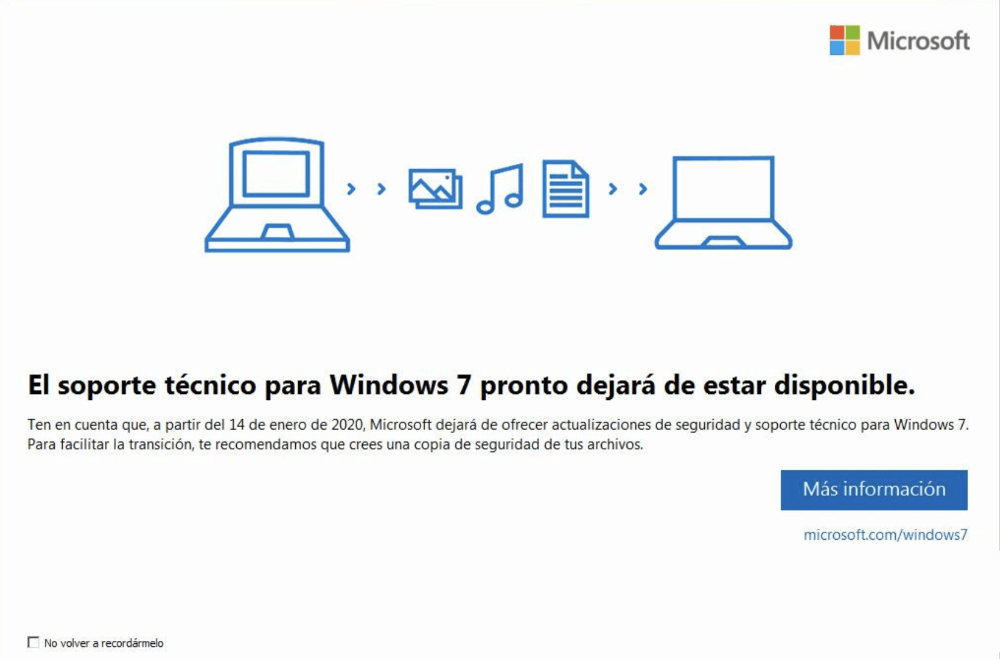

Computadoras
Descubren forma de sacar datos de una computadora a través de su fuente de poder.

Por lo general cuando se invoca la palabra “hacker” es para relacionarla con algún acto que involucra violar seguridad de algo y causar daños o robos de información, pero la verdad sea dicha, no debemos confundir a un hacker con un ciberdelincuente, porque el primero puede lograr cosas en base a su conocimiento sin causar daños, mientras que el segundo utiliza su conocimiento para robar información, causar estragos y últimamente incluso estafar a los usuarios de un dispositivo robándole datos y hasta secuestrándolos y cobrando por liberarlos.
Malwarebytes tira por el piso creencia de que las computadoras Apple son más seguras.
Desde hace años se ha dicho que si comparábamos una computadora con Windows y otra de Apple, la segunda te daría mucha más seguridad como usuario y que prácticamente serías infranqueable por cualquier tipo de amenaza existente, y si bien es cierto que por muchos años este casi eslogan tuvo mucho de cierto, la verdad es que en la actualidad está lejos de ser una verdad.
El fin del soporte para un grande: Windows 7 pierde todo el soporte por parte de Microsoft.
Soy de la escuela antigua cuando se habla de utilizar sistemas operativos de escritorio, alcance a utilizar Windows 95 yu desde ahí en adelante la vida o mi trabajo como informático me han cruzado en el camino todas las versiones de sistemas operativos de Microsoft, tanto en versiones para usuarios “normales” como para servidores y un uso más avanzado en cuando a la administración de plataformas computacionales.
Facebook prepara integración con WhatsApp para aumentar la cantidad de personas en una videollamada.
Hace algunos meses las redes sociales de mensajería iban evolucionando correctamente pero a una velocidad calmada, las ideas en torno a ellas eran muchas y poco a poco nos enterábamos como estas se preparaban para seguir creciendo, eso hasta que llegó la pandemia y de un momento a otro los habitantes del mundo vieron como su relación con otras personas se reducía solo a estar frente al PC o el teléfono viendo por video a sus seres queridos, pensando siempre en que lo mejor es estar lejos para no ponernos en riesgo y salir pronto de esta pesadilla.
Huawei tiene nueva alternativa para suplir la falta de la Play Store.
El distanciamiento que tiene Huawei con Google por culpa del bloqueo económico impuesto por Estados Unidos tuvo efectos negativos para la marca China, que si, estos siguen su camino y sus productos van a seguir saliendo al mercado, el tema software se ha puesto complejo para Huawei y los tiene buscando alternativas para suplir la falta de la Play Store.
WhatsApp consigue importante marca en el mundo del androide.
Desde que se creó el concepto de “teléfono inteligente”, las aplicaciones para estos dispositivos comenzaron a crearse por montones, sobre todo para el entorno Android, y si bien es cierto que los primeros años costó para que tuviéramos una cantidad importante de apps, ahora a diario se publican nuevas propuestas de un sin fin de rubros, desde financieros, entretención, hasta redes sociales.